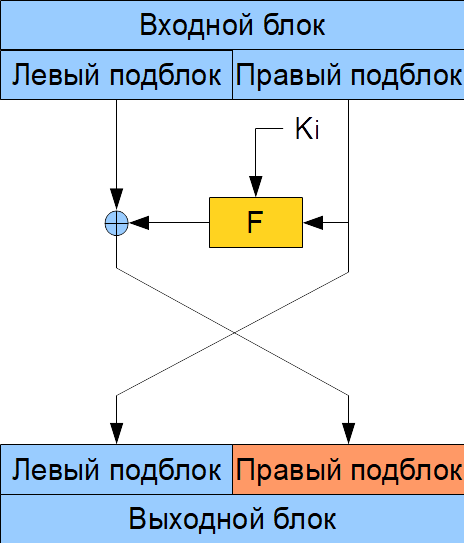
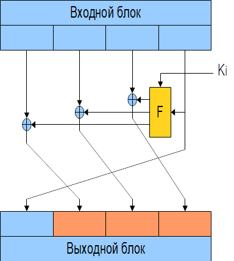

Шифры классической сети Фейстеля имеют структуру раундовой функции, представленную на рис. 3.3. В классической сети Фейстеля исходный блок данных делится на две половины, одна из которых преобразуется некоторой функцией шифрования F с ключом текущей итерации, а затем поразрядно складывается с другой половиной блока, после чего результат и исходная половина блока меняются местами.
 |
Рис. 3.3. Схема классической сети Фейстеля |
Данная структура обладает рядом достоинств:
− процедуры шифрования и расшифрования совпадают, поэтому упрощается программная реализация алгоритма и снижается стоимость аппаратной реализации;
− функция F не должна быть биективной (обратимой), что существенно расширяет возможности по ее построению. Это объясняется тем, что при проведении обратного преобразования используется та же функция F, а не обратная ей, т. е. операции шифрования и расшифрования отличаются только порядком использования ключевых элементов.
Недостатком сетей Фейстеля является то, что на каждой итерации изменяется только половина блока обрабатываемого текста, а это приводит к необходимости увеличивать число итераций, для достижения требуемой стойкости. В соответствии с классической сетью Фейстеля реализованы алгоритмы DEAL, DFC, E2, LOKI97, MAGENTA, TWOFISH.
Фактически классическая сеть Фейстеля представляет собой дополнительное линейное преобразование одной половины блока, зависящее от значения нелинейной функции от второй половины блока, поэтому сеть Фейстеля формально можно отнести к классу управляемых преобразований.
К "модифицированной сети Фейстеля" относятся структурно аналогичные БШ, обрабатывающие более двух блоков одинаковой длины (рис. 3.4).
 |
Рис. 3.4. Схема модифицированной сети Фейстеля |
Появление таких конструктивных решений объясняется тем, что в современных алгоритмах при использовании блоков большого размера становится неудобно манипулировать подблоками большой длины, эта же проблема возникает при проектировании аппаратных устройств на микропроцессорах малой разрядности. Наибольшее распространение получила сеть Фейстеля с четырьмя ветвями и ее варианты, в которой 128-битный входной блок разделяется на четыре 32-битных числа, операции с которыми есть в любой микропроцессорной системе.